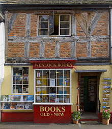
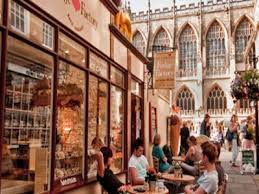

Many book shops can be found in Bath, ranging from well-known retailers like Waterstones to fabulous independents such as Topping & Company Booksellers, with its star studded line up of guest authors regularly visiting the shop.Don’t miss Mr B’s, appointed with comfy armchairs for curling up in, once you’ve found a good book. The Guildhall Market has a great stall that sells used books, where you can pick up some real bargains. If you’re after a book on local history or a guide book to the area, pop in the Visitor Information Centre Gift Shop, which stocks one of the best ranges of Bath books in town.
Find the latest styles at one of the many leading brands in the city, such as, All Saints, Topshop, Hollister, Kurt Geiger, Reiss and Seasalt. For something special, head to one of the stores seldom found outside of London, such as Anthropologie, Toast, Gieves and Hawkes, Banana Republic and The Kooples. If you’re after something a little different that can’t be found elsewhere, make sure you explore the multitude of independent shops, famous for setting Bath apart from any other shopping destination. Find beautiful boots at Chanii B; luxury leather handbags at Ezza; pre-loved vintage clothing at Scarlet Vintage and Vintage to Vogue; and the latest ladies fashions at Blue and Square.

Whether you’re looking for a gift from Bath for family and friends or a memento of your stay to keep for yourself, you’ll find plenty of beautiful items in shops across the city. The Bath Visitor Information Centre Gift Shop is the perfect place to pick up a souvenir, stocked full of lovely gifts made by local designers. Another great location for present hunting is at the renowned Bath Christmas Market, where 150 wooden chalets adorn the city centre, stocked full of gorgeous gifts and foodie treats.